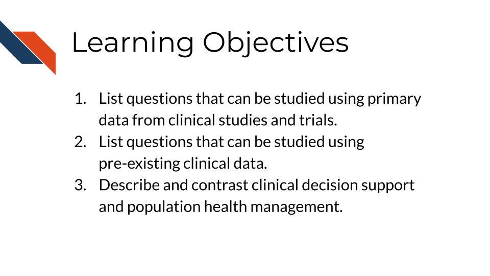
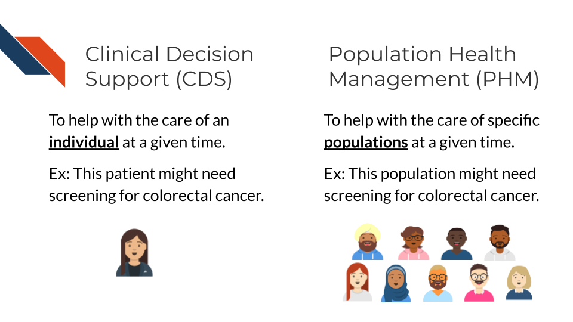

6 Clinical Data Uses
7 Clinical Data Uses
The previous chapters describe how to carefully design studies to collect clinical data and resources for acquiring existing clinical data. In this chapter, we discuss different ways in which clinical data can be used and the types of questions that can be addressed by analyses of clinical data.
7.1 Learning Objectives
7.2 Questions that can be studied using clinical data
7.2.1 Questions that can be studied using primary data
Here, we explore the different categories of questions that can be addressed using primary data from clinical studies and trials, ranging from the evaluation of treatment efficacy and safety to the exploration of predictive factors for disease prognosis and the personalization of medical care. Primary data are data collected by a researcher for a specific study. Different types of clinical studies and trials are described in Section 4.2.
- Efficacy and Effectiveness Questions
One of the primary objectives of clinical trials is to determine the efficacy of new treatments or interventions. Data from trials are used to answer fundamental questions such as “What is the capacity of the new treatment to affect the outcome in controlled settings?” and “How does the effect of this new treatment compare to existing treatments?” Researchers design studies to measure the magnitude of treatment effects, comparing outcomes between treatment and control groups (e.g., a new drug versus a placebo or standard care).
Beyond controlled settings, data from observational studies can further address questions about the effectiveness of treatments when applied in routine clinical practice. For example, “Is Drug A more effective than Drug B in managing hypertension in a real-world patient population?” Such questions help to assess how treatments perform outside the controlled environment of clinical trials where patient adherence, comorbidities, and polypharmacy may influence outcomes. While clinical trials are an important source of real-world data, they are typically conducted under tightly controlled conditions, which may not fully reflect the complexities of real-world studies. This makes real-world evidence from observational studies particularly valuable for understanding how treatments work when patients have varying levels of adherence or multiple chronic conditions that are often excluded from clinical trails.
Comorbidities: refer to the presence of one or more additional medical conditions or diseases that coexist with a primary condition in a patient. These conditions can occur independently or be related to the primary disease.
- Safety and Tolerability Questions
Safety is a critical aspect of any clinical study, and clinical data are essential in identifying and characterizing the safety profile of new treatments. Questions like “What are the common adverse effects of the new treatment?” or “What is the incidence of serious adverse events (SAEs) in patients receiving Drug A?” are addressed by carefully monitoring and recording adverse events throughout the study. Comparative safety questions also arise, such as “Does Drug A have fewer adverse effects compared to Drug B?” These questions are crucial in weighing the benefits of a treatment against its risk and in identifying specific populations that may be at higher risk of adverse reactions.
Serious Adverse Events (SAEs): Any medical occurrence during a clinical trial or medical treatment that results in significant negative outcomes, such as death, life-threatening situations, hospitalization (or its prolongation), persistent or significant disability, or congenital anomalies. SAEs also include any event that requires intervention to prevent one of these outcomes.
Incidence: Refers to the rate or number of new cases of SAEs that occur within a specific population during a defined time period, typically during a clinical trial or study. Is it usually expressed as a proportion, such as the number of SAEs per 100 or 1,000 participants, and helps measure how frequently these serious events happen among those exposed to a particular treatment or intervention.
- Comparative Effectiveness and Cost-Effectiveness Questions
Beyond safety and efficacy, clinical data can be used to evaluate the comparative effectiveness of different treatments and their cost-effectiveness. These questions often guide healthcare policy and clinical guidelines: “Is Drug A more cost-effective than standard care for managing chronic heart failure?” and “What is the cost per quality-adjusted life year (QALY) gained with the new intervention?” Such analyses provide valuable information for stakeholders, including healthcare providers, payers, and policymakers, to make informed decisions on resource allocation.
Cost per quality-adjusted life year (QALY) is a metric used in health economics to assess the value of a medical intervention by measuring the cost of gaining one year of life adjusted for its quality. A QALY incorporates both the quantity and quality of life lived, where one QALY is equivalent to one year of life in perfect health. If a treatment improves both the length and quality of life, it earns more QALYs. The cost per QALY is calculated by dividing the cost of the treatment by the number of QALYs gained, helping to determine the cost-effectiveness of healthcare interventions. Lower cost per QALY indicates better value for money in terms of health benefits achieved (2015).
- Mechanistic and Biomarker Questions
Clinical studies often explore not just whether a treatment works, but also how it works. Mechanistic questions delve into the underlying biological pathways affected by a treatment. For instance, “Does Drug A work by inhibiting a specific enzyme involved in the disease process?” Biomarker data can play a key role in such analyses, helping to identify molecular markers that predict response to treatment. Questions like “Are there biomarkers that can predict which patients are more likely to benefit from Drug A?” help in developing targeted therapies and personalized treatment approaches.
- Predictive and Prognostic Questions
Clinical trials and studies frequently aim to identify factors that predict disease outcomes or treatment responses. For example, “What baseline characteristics predict a better response to Drug A?” or “What are the predictors of mortality in patients with severe heart failure?” Such prognostic and predictive questions are crucial for identifying high-risk patients, guiding treatment decisions, and developing clinical guidelines. Identifying patient subgroups that benefit more or less from a treatment also facilitates personalized medicine approaches, ensuring that the right treatment is delivered to the right patient at the right time.
With the advent of personalized medicine, clinical data are increasingly being used to answer questions tailored to individual patient profiles. For instance, “What patient characteristics modify the effect of the treatment?” or “Can we predict which patients are most likely to benefit from Drug A using machine learning models?” These questions are at the forefront of precision medicine, where the goal is to customize healthcare to each patient based on their unique genetic, biomarker, and clinical characteristics.
- Quality of Life and Patient-Reported Outcome Questions
In modern clinical research, the impact of treatments on patients’ quality of life and their subjective experiences has gained prominence. Questions such as “How does Drug A affect patients’ quality of life compared to standard care?” or “What are the patient-reported outcomes associated with the new intervention?” are increasingly addressed in clinical trials. Data from quality of life assessments which are standardized and validated questionnaires (for example, the Health Assessment Questionnaire or HAQ), patient-reported outcome measures (PROMs, tools or questionnaires used to assess a patient’s health status or health-related quality of life directly from the patient’s perspective), and other patient-centric endpoints (Smoking History, Surgical History, etc.) provide valuable insights into how treatments affect patients beyond traditional clinical endpoints.
- Longitudinal and Follow-Up Questions
Long-term follow-up studies are essential for understanding the durability of treatment effects and any delayed adverse effects. Questions like “What are the long-term outcomes associated with Drug A?” and “Is there a sustained benefit of Drug A in reducing symptoms after five years?” are vital for assessing the overall value of treatments. Such longitudinal analyses help in determining the optimal duration of therapy, the need for maintenance treatments, and the overall benefit-risk profile of an intervention.
- Safety in Special Populations Questions
Clinical data can also be used to evaluate the safety and efficacy of treatments in special populations, such as children, pregnant women, or elderly patients. Questions such as “Is Drug A safe for use in pregnant women?” and “What is the risk of adverse events when Drug A is administered to patients with multiple comorbidities?” are essential for developing age- and condition-specific clinical guidelines. These questions help ensure that treatments are tailored to the needs of different patient populations, minimizing harm and maximizing benefits.
- Adherence and Compliance Questions
Patient adherence to prescribed treatment regimens can significantly impact the outcomes of clinical studies. Questions like “What factors influence patient adherence to the new treatment?” and “How does adherence affect treatment efficacy?” are addressed through analyzing adherence data through monitors if a regulated study, or with interim/baseline analysis if non-regulated. Understanding these factors can lead to interventions that improve adherence and, consequently, the effectiveness of the treatment.
- Real-World Evidence and Generalizability Questions
Real-world evidence (RWE) studies help bridge the gap between clinical trial results and clinical practice. Questions such as “How generalizable are the results of this clinical trial to the broader population?” or “What is the impact of real-world use patterns on treatment outcomes?” are essential for understanding how well clinical trial findings apply to everyday clinical settings. These questions help determine if the benefits observed in clinical trials can be replicated in diverse patient populations under routine care conditions.
- Prevention and Risk Reduction Questions
Clinical data are also crucial in answering questions related to prevention and risk reduction strategies. For example, “Can the new treatment reduce the risk of developing diabetes in high-risk individuals?” or “What factors are associated with a reduced risk of cardiovascular disease in a large cohort study?” These questions are fundamental in preventive medicine, guiding public health interventions and informing clinical practice.
7.2.1.1 Summary
Clinical trials and studies provide a wealth of information that can be leveraged to answer a broad array of questions. From understanding treatment efficacy and safety to exploring long-term outcomes, quality of life impacts, and the potential for personalized medicine, clinical data are foundational to advancing medical knowledge and improving patient care. The types of questions that can be asked and answered are continually evolving as new data sources, analysis methods, and research paradigms emerge, further enriching the field of clinical research.
7.2.2 Questions that can be asked with secondary data
Here, we explore categories of questions that can be addressed using secondary data. Secondary data analysis involves the examination of pre-existing clinical data to answer specific research questions, explore hypotheses, and identify patterns or trends. This method leverages data collected from medical records, administrative databases, registries, electronic health records (EHRs), or other sources of clinical information. More information about resources for acquiring secondary data can be found in Chapter 5. Many of these question categories overlap with the categories of questions that can be addressed using primary data.
- Descriptive Questions
Descriptive questions aim to summarize and describe the characteristics of a patient population, disease, or healthcare process. They are often the starting point for more complex analyses.
- Patient Demographics and Characteristics: What are the demographic profiles (age, gender, ethnicity, socioeconomic status) of patients diagnosed with a specific condition? What are the common comorbidities and risk factors in this population?
- Disease Prevalence and Incidence: What is the prevalence (number of cases at a specific time point) or incidence (number of cases over a specific time period) of a specific disease or condition in a particular population or geographic area over a defined period?
- Clinical Presentation: What are the most common presenting symptoms, clinical signs, or laboratory findings associated with a specific disease or condition?
These questions help in understanding the baseline characteristics and epidemiology of diseases, which is crucial for planning further studies or developing public health interventions.
- Treatment and Intervention Questions
Secondary data can be used to examine the real-world effectiveness, safety, and patterns of treatment and interventions. These questions are critical for understanding how treatments are applied in clinical practice and their outcomes:
- Treatment Effectiveness: What is the effectiveness of a specific treatment or intervention in reducing symptoms, improving quality of life, or achieving clinical outcomes in a real-world setting?
- Adherence and Persistence: What are the rates of adherence and persistence with a prescribed treatment regimen over time? What factors are associated with higher or lower adherence rates?
- Comparative Effectiveness: How does the effectiveness of one treatment compare to another in a similar population? What are the relative benefits and risks associated with different treatment options?
By examining historical data, researchers can gain insights into how different treatments perform outside the controlled environment of clinical trials, thereby informing clinical decision-making and guidelines.
- Outcome and Prognostic Questions
Understanding patient outcomes and prognostic factors is central to secondary data analyses. These questions focus on the end results of healthcare practices and patient management, including survival, complications, and quality of life:
- Survival and Mortality: What are the survival rates and mortality rates associated with a particular disease, condition, or treatment? What factors are associated with increased or decreased survival rates?
- Complication Rates: What are the rates and types of complications associated with specific diseases, surgeries, or treatments? Are there identifiable risk factors for these complications?
- Prognostic Factors: What are the key prognostic factors (e.g., age, stage of disease, comorbidities) that influence the outcomes of patients with a particular condition?
These questions help identify factors that influence patient outcomes, guiding clinicians in predicting disease progression and tailoring individual treatment plans.
- Risk Factor and Predictive Modeling Questions
Secondary data analyses are often used to identify potential risk factors for diseases and develop predictive models. These questions aim to uncover associations between variables and outcomes to help predict future events:
- Risk Factors for Disease: What are the risk factors associated with developing a particular disease or condition? Are there demographic, genetic, behavioral, or environmental factors that significantly increase the risk?
- Prediction Models: Can we develop a predictive model to estimate the likelihood of disease progression, relapse, or adverse outcomes based on historical patient data?
- Multivariable Analysis: How do multiple factors interact to influence the risk of an outcome? Are there synergistic or antagonistic effects between different risk factors?
These questions are critical for developing tools that help clinicians assess risk and make more informed decisions in preventive care and early intervention.
- Healthcare Utilization and Cost Questions
Understanding how healthcare resources are utilized and the associated costs is important for optimizing healthcare delivery. Secondary data can provide valuable insights into patterns of care and resource allocation for questions such as:
- Healthcare Resource Utilization: What are the patterns of healthcare utilization (e.g., hospitalizations, emergency room visits, outpatient visits) for patients with a specific condition? How does utilization vary by patient demographics, disease severity, or geographic location?
- Cost of Care: What are the direct and indirect costs associated with managing a specific disease or condition? How do different treatment options impact overall healthcare costs?
- Cost-Effectiveness: How does the cost-effectiveness of one treatment or intervention compare to another? What are the economic impacts of different clinical management strategies?
These questions can inform healthcare policy, budget planning, and the development of strategies to improve cost-effectiveness and access to care.
- Quality of Care and Patient Safety Questions
Secondary data analysis can be used to evaluate the quality and safety of care provided to patients, identifying areas for improvement and potential patient safety concerns, helping to answer questions such as:
- Quality Indicators: Quality indicators are standardized measures of health care quality and may focus on more specialized groups of care like preventative, inpatient or emergency care, pediatric or maternal health, etc. What are the levels of observed mortality or morbidity for a certain population in a specific setting? How utilized are certain procedures? (“AHRQ Quality Indicator Measures,” n.d.)
- Adverse Events and Safety: What is the incidence of adverse events, medication errors, or healthcare-associated infections in a particular patient population? What factors are associated with higher or lower rates of adverse events?
- Patient Satisfaction and Experience: What are the reported levels of patient satisfaction with healthcare services? How does satisfaction vary by demographic or clinical characteristics?
These questions help in assessing healthcare quality, identifying gaps in care, and developing interventions to enhance patient safety and satisfaction.
- Temporal and Trend Analysis Questions
Studies of secondary data often involve analyzing temporal patterns to understand how diseases, treatments, or outcomes change over time. These questions help in recognizing trends and patterns that can inform future research and policy decisions:
- Temporal Trends in Disease Incidence and Prevalence: How have the incidence and prevalence of a specific disease changed over the past decade? Are there seasonal or cyclical patterns in disease occurrence?
- Trends in Treatment Practices: How have treatment practices and prescribing patterns evolved over time? Are there emerging trends in the use of certain medications or interventions?
- Trends in Outcomes and Survival: How have patient outcomes, such as survival rates or complication rates, changed over time with advances in treatment and healthcare delivery?
These questions are essential for monitoring public health trends, evaluating the impact of interventions, and planning future healthcare strategies.
- Subgroup and Stratified Analysis Questions
Subgroup analyses can help uncover differences in disease characteristics, treatment responses, and outcomes among different patient groups. This type of analysis is particularly valuable for personalized medicine and addressing questions related to health disparities:
- Differences by Demographic Group: How do treatment outcomes, risk factors, or disease characteristics differ between various demographic groups (e.g., age, gender, race/ethnicity)?
- Subgroup-Specific Effectiveness: Does a particular treatment work better in one subgroup of patients compared to another? What factors might explain these differences?
- Health Disparities: Are there disparities in healthcare access, treatment outcomes, or disease burden across different socioeconomic or minority groups?
Questions focusing on subgroups are crucial for understanding variations in care and outcomes, identifying at-risk populations, and developing targeted interventions.
- Cohort Identification Questions
Researchers typically use electronic health records (EHRs), administrative databases, or registries to identify cohorts based on predefined inclusion and exclusion criteria, including age, gender, medical conditions, treatments, medications, and outcomes.
- Cohort Identification: Which individuals meet the eligibility criteria for the study of a particular treatment, exposure, or outcome?
Cohort identification is a critical step in study design. After identifying eligible cohorts, researchers may analyze the secondary data to evaluate disease progression, treatment effectiveness, and outcomes, or use the identified population to support recruitment for a prospective clinical study or trial.
7.2.2.1 Summary
Analysis of secondary clinical data allows researchers to ask a wide range of questions that provide valuable insights into patient characteristics, disease epidemiology, treatment effectiveness, outcomes, risk factors, healthcare utilization, and more. By carefully formulating questions and analyzing pre-existing data, researchers can uncover patterns, identify trends, and generate evidence that informs clinical practice, healthcare policy, and future research directions.
7.3 Applications of Clinical Data
Clinical data can be used to enable data-driven interventions such as provider- and patient-facing clinical decision support (CDS) and population health management (PHM).

CDS can help patients and clinicians make decisions about an individual’s care, while PHM can help identify individuals for interventions and engagement. The image shows a single person getting a colorectal screening reminder for CDS and a population being identified for possibly needing colorectal screening for PHM.
7.3.1 Clinical Decision Support (CDS)
CDS has been defined as tools that “provide clinicians, staff, patients, or other individuals with knowledge and person-specific information, intelligently filtered or presented at appropriate times, to enhance health and health care” (Osheroff et al. 2007). Examples of widely adopted CDS tools with demonstrated effectiveness for cancer prevention, diagnosis, and care include:
- Provider and patient reminders for cancer screening
- Decision aids and shared decision-making tools (e.g., for prostate cancer treatment, lung cancer screening)
- AI-supported diagnostic imaging
- Chemotherapy decision support
- At-home symptom care
7.3.2 Population Health Management (PHM)
While CDS tools generally provide decision support focused on a specific patient at a time, PHM are strategies that target specific patient populations (Swarthout and Bishop 2017). PHM efforts generally consist of:
- Population algorithms that are applied over EHR and other data sources to identify individuals who are eligible for a specific healthcare intervention (e.g., colorectal cancer screening, tobacco cessation, HPV vaccination)
- Patient engagement strategies (e.g., patient portals, text messaging, chatbots, patient navigators) that provide education and access to those interventions
- Analytic tools that assess the effectiveness of the PHM program.
Several PHM programs have demonstrated to be effective in increasing the uptake of cancer prevention. For example, the colorectal cancer screening program at Kaiser Permanente uses digital (i.e., text messaging, patient portal), mailed, and patient navigation approaches to increase colorectal cancer screening by mailing Fecal Immunohistochemical Test (FIT) kits to patients’ homes (Gupta et al. 2020). Also the Cancer Moonshot BRIDGE trial used the GARDE platform (Bradshaw et al. 2022) (ITCR-funded) to identify candidates for genetic testing of hereditary cancer syndromes based on EHR data; and for patient outreach, pre- and post-test education via automated chatbots (Kaphingst et al. 2024).
7.3.3 Emerging Technology
While some CDS and PHM approaches have been successfully adopted widely, emerging technologies such as the use of generative AI approaches to analyze diagnostic imaging, large language models (LLMs) to extract information from narrative texts (e.g., clinical notes), LLM-based chatbots to communicate with patients, and digital health tools such as home-based sensors are creating unprecedented opportunities for next generation CDS and PHM. These approaches have the potential to enable significant breakthroughs through the implementation of patient-tailored cancer prevention and care at a population scale. Nevertheless, substantial research is needed to ensure effective and fair implementation of these CDS and PHM interventions.
7.4 Summary
Clinical data have many important uses in evaluating treatments and interventions, understanding diseases, and improving healthcare delivery. Some questions are best answered using primary data collected from clinical studies and trials, while others can be answered using secondary clinical data from EHR, administrative databases, registries, and other sources. Clinical data can also be applied to clinical decision support for individuals and to population health management for specific patient populations.
“AHRQ Quality Indicator Measures.” n.d. Agency for Healthcare Research and Quality (Department of Health and Human Services). https://qualityindicators.ahrq.gov/measures/qi_resources.
Bradshaw, Richard L, Kensaku Kawamoto, Kimberly A Kaphingst, Wendy K Kohlmann, Rachel Hess, Michael C Flynn, Claude J Nanjo, et al. 2022. “GARDE: A Standards-Based Clinical Decision Support Platform for Identifying Population Health Management Cohorts.” Journal of the American Medical Informatics Association : JAMIA 29 (5): 928–36. https://doi.org/10.1093/jamia/ocac028.
Drummond, M. F., M. J. Sculpher, K. Claxton, G. L. Stoddart, and G. W. Torrance. 2015. Methods for the Economic Evaluation of Health Care Programmes. Oxford: Oxford University Press.
Gupta, Samir, Gloria D. Coronado, Keith Argenbright, Alison T. Brenner, Sheila F. Castañeda, Jason A. Dominitz, Beverly Green, et al. 2020. “Mailed Fecal Immunochemical Test Outreach for Colorectal Cancer Screening: Summary of a Centers for Disease Control-Sponsored Summit.” CA: A Cancer Journal for Clinicians 70 (4): 283–98. https://doi.org/10.3322/caac.21615.
Kaphingst, Kimberly A., Wendy K. Kohlmann, Rachelle Lorenz Chambers, Jemar R. Bather, Melody S. Goodman, Richard L. Bradshaw, Daniel Chavez-Yenter, et al. 2024. “Uptake of Cancer Genetic Services for Chatbot Vs Standard-of-Care Delivery Models: The BRIDGE Randomized Clinical Trial.” JAMA Network Open 7 (9): e2432143. https://doi.org/10.1001/jamanetworkopen.2024.32143.
Osheroff, Jerome A., Jonathan M. Teich, Blackford Middleton, Elaine B. Steen, Adam Wright, and Don E. Detmer. 2007. “A Roadmap for National Action on Clinical Decision Support.” Journal of the American Medical Informatics Association : JAMIA 14 (2): 141–45. https://doi.org/10.1197/jamia.M2334.
Swarthout, Meghan, and Martin A. Bishop. 2017. “Population Health Management: Review of Concepts and Definitions.” American Journal of Health-System Pharmacy 74 (18): 1405–11. https://doi.org/10.2146/ajhp170025.